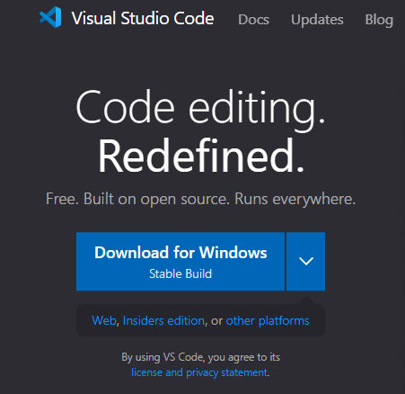
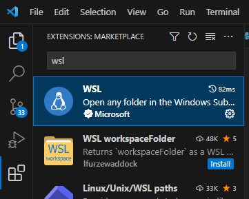
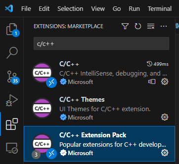

Installing and setting up Visual Studio Code (VSC)
1.- Go to https://code.visualstudio.com/, download the las VScode version and install it
2.- Open VSCode and, in the upper-left nav, click on the extensions section (4 squares)
Note
You can click in the Windows icon and search for it typing “vscode”
3.- Search for WSL and install the first option
4.- Close it
5.- Open the wls Ubuntu terminal
6.- Go to the repository folder: cd OOT/oot
7.- Type code . to open VSCode from that environment
8.- Go to the extensions section, search for C/C++ Extension Pack and install it
9.- Having all of that done, copy the content of this git file https://gist.github.com/krm01/7345ca80e0e7f6b083a0ea4e85515d4b
//(Content from 01/12/2023)
{
"configurations": [
{
"name": "Linux",
"compilerPath": "${default}", // Needs to not be "" for -m32 to work
"compilerArgs": [
"-m32" // Removes integer truncation warnings with gbi macros
],
"intelliSenseMode": "${default}", // Shouldn't matter
"includePath": [ // Matches makefile's includes
"${workspaceFolder}/**",
"src",
"assets",
"build",
"include"
],
"defines": [
"_LANGUAGE_C" // For gbi.h
],
"cStandard": "gnu89", // C89 + some GNU extensions from C99 like C++ comments
"cppStandard": "${default}" // Only ZAPD uses C++, so doesn't really matter
}
],
"version": 4
}
10.- Go to VSCode and press Ctrl+N to open a new file
11.- Copy the content of the file there and save the file in /home/mega/OOT/oot/.vscode/c_cpp_properties.json
Note
You can save the content of a file pressing: Ctrl+S
Warning
In th example the path starts with /home/mega/. In your case, instead of mega, you must put there your Ubuntu wsl username, the one you defined the first time you opened it.